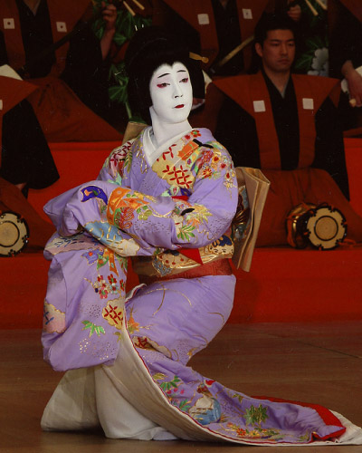
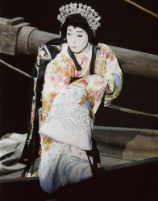
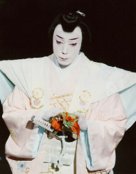

プロフィール
 > 尾上菊之助
> 尾上菊之助

「鏡獅子」小姓弥生
尾上菊之助
昭和52年８月１日七代目尾上菊五郎の長男として生まれる｡昭和59年２月歌舞伎座『絵本牛若丸』の牛若丸で六代目尾上丑之助を名のり初舞台｡
平成4年には、祖父梅幸、父菊五郎とともに歌舞伎座で『京鹿子三人道成寺』を踊る。平成８年５月歌舞伎座『白浪五人男』の弁天小僧『春興鏡獅子』の小姓弥生で五代目尾上菊之助を襲名｡『本朝廿四考』の八重垣姫（平成12年）など女方の次々と大役を勤めるとともに、現代演劇の分野でも、蜷川幸雄演出の『グリークス』でオレステス役を演じ注目を集める。
平成16年には、御園座で上演された復活狂言の『児雷也豪傑譚話』の児雷也役で、初めて芯となる立役を演じている。また十一代目市川海老蔵襲名披露では、『助六由縁江戸桜』の揚巻、『与話情浮名横櫛』のお富など次の時代を担う女方としての期待が高まった。
平成17年は、自らが先頭に立って蜷川幸雄演出の『NINAGAWA 十二夜』を実現させ、獅子丸、主膳之助、琵琶姫の三役を替わり、演劇賞を多数受賞。
近年では、坂東玉三郎と『京鹿子娘二人道成寺』の上演を重ね、新橋演舞場の『伽羅先代萩』では清新な政岡を勤めるなど、人気、実力を兼ね備えた若手花形として修業を重ねている。
受賞歴
平成８年浅草芸能大賞新人賞｡17年読売演劇大賞杉村春子賞、朝日舞台芸術賞寺山修司賞、芸術選奨文部科学大臣新人賞。

『NINAGAWA 十二夜』琵琶姫

『NINAGAWA 十二夜』獅子丸
Copyright © Otowaya All Rights Reserved.